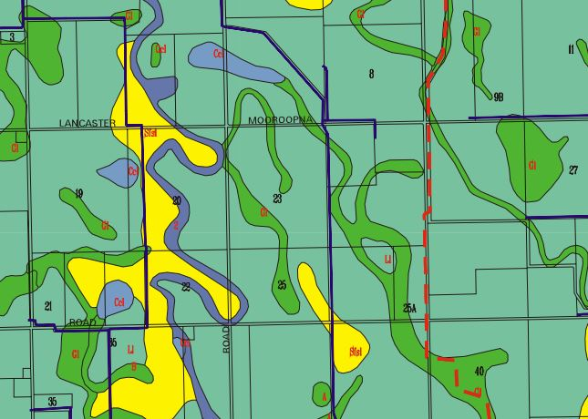

Soils of the Gouburn Murray Irrigation District Web Feature Service
The soils of the GMID have been described as part of extensive soil surveys undertaken in the 1940's, 50's and 60's. Soil surveys were carried out by soil auger with holes 20 m to 400 m apart at depths between 1.2 m and 2.1 m. The surveyors then examined the horizons of the profile and noted their texture, colour, thickness, and the presence of lime and gypsum. Soil maps were prepared using aerial photography and digitised to provide detailed soil mapping as depicted below.

Soil map from the Goulburn Murray Irrigation District
You can find more information on the soil surveys conducted in this region on Victorian Resources Online.
Maps of the GMID are now available as a web feature service that can be intergrated into desktop mapping and design clients such as ArcGIS, QGIS and Autocad. The following link describes how to access the Soils Web Feature Service.
Back to FarmBuild